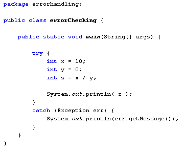

In Java, errors are handled by an Exception object. Exceptions are said to be thrown, and it's your job to catch them. You can do this with a try … catch block. The try … catch block looks like this:
try {
}
catch ( ExceptionType error_variable ) {
}
The try part of the try … catch block means "try this code". If something goes wrong, Java will jump to the catch block. It checks what you have between the round brackets to see if you have handled the error. If you have the correct Exception type then whatever code you have between the curly brackets of catch will get executed. If you don't have the correct Exception type then Java will use its default exception handler to display an error message.
As an example, create a new console application. Call it anything you like. In the code for the Main method, enter the following:
try {
int x = 10;
int y = 0;
int z = x / y;
System.out.println( z );
}
catch ( Exception err ) {
System.out.println( err.getMessage( ) );
}
In the try part of the try … catch block, we have set up three integers, x, y and z. We are trying to divide y into x, and then print out the answer.
If anything goes wrong, we have a catch part. In between the round brackets of catch we have this:
Exception err
The type of Exception you are using comes first. In this case we are using the Exception error object. This is a "catch all" type of Exception, and not very good programming practice. We'll change it to a specific type in a moment.
After your Exception type you have a space then a variable name. We've called ours err, but you can it almost anything you like.
In the curly brackets of catch we have a print statement. But look what we have between the round brackets of println:
err.getMessage( )
getMessage is a method available to Exception objects. As its name suggests, it gets the error message associated with the Exception.
Run your programme and test it out. Your code should look something like this:

And the Output window should display the following:
run:
/ by zero
BUILD SUCCESSFUL (total time: 1 second)
The error itself, the one generated by getMessage, is the line in the middle:
/ by zero
In other words, a divide by zero error. Java won't let you divide a number by zero, hence the error message.
Change your code to this:
double x = 10.0;
double y = 0.0;
double z = x / y;
The rest of the code can stay the same. Run your programme and test it out.
Again, an error message will be displayed in the Output window. This one:
run:
Infinity
BUILD SUCCESSFUL (total time: 1 second)
This time, Java stops the programme because the result will be an infinitely large number.
Errors that involve numbers shouldn't really be handled by a "catch all" Exception type. There is a specific type called ArithmeticException. Delete the word Exception between the round brackets of your catch block. Replace it with ArithmeticException. Now run the programme again.
You should find no difference in the error message displayed in the Output window. But you're using good programming practice by narrowing down the type of error you expect.
In the next part, you'll learn what a Stack Trace is.